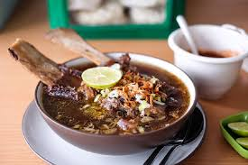

S O P K O N R O M A K A S S A R

Makanan yang juga masuk ke 10 makanan khas Sulawesi Selatan yaitu Sop
Konro. Sop yang satu ini sangat terkenal di berbagai wilayah bukan hanya
di wilayah Sulawesi saja namun banyak warung makan di Pulau Jawa yang juga
sudah menjual makanan ini. Sop Konro terbuat dari bahan yang berkualitas
serta memiliki cita rasa yang sangat kuat. Sop ini terbuat dari
daging sapi yang direbus lama sehingga
sangat empuk sekali.
Kuah dari Sop Konro juga begitu menggoda karena terlihat pekat dan juga
sangat beraroma. Anda bisa menikmati makanan ini dengan nasi hangat.
Varian dari Sop Konro yang juga tidak kalah menggoda adalah Sop Konro bakar.
Berikut ini bahan-bahan dan cara pembuatannya:
-
- 500 gram iga sapi atau tulang sapi
- 5 siung bawang merah
- 7 siung bawang putih
- 1/2 sdt ketumbar
- 1/2 sdt merica butir
- 1/2 sdt jintan
- 2 buah kluwek rendam air panas
- 5 butir kemiri
- 1 ruas kunyit
- 1 ruas jahe
- 2 batang serei ambil putihnya
- 1 buah pala
- 2 lembar daun salam
- 1 ruas lengkuas memarkan
- Garam dan kaldu bubuk secukupnya
- Air
- Minyak buat menumis
- Bawang goreng
- Daun bawang dan seledri
- Sambal
- Jeruk Nipis
-
- Presto iga sapi selama 45 menit agar lunak
- Lalu pindahkan ke panci biasa lalu rebus kembali dan tambahkan daun salam dan lengkuas di memarkan dan beri air asam jawa
- Tumis bumbu halus hingga harum lalu masukan ke kuah kondro masak hingga matang beri garam dan kaldu bubuk
Kembali Ke Atas